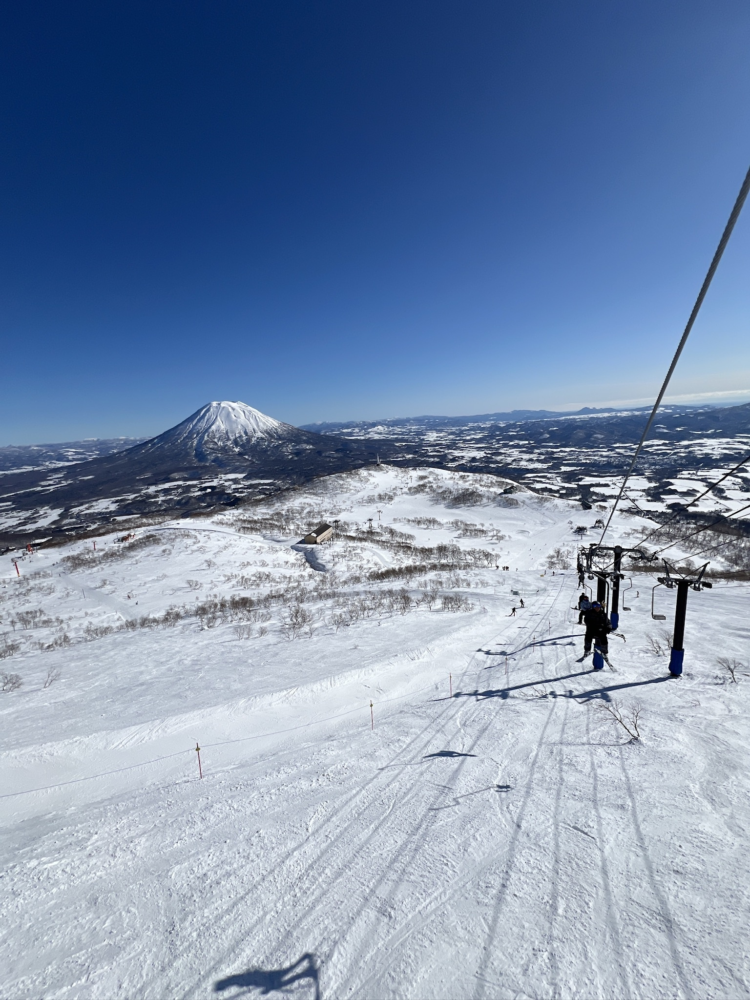
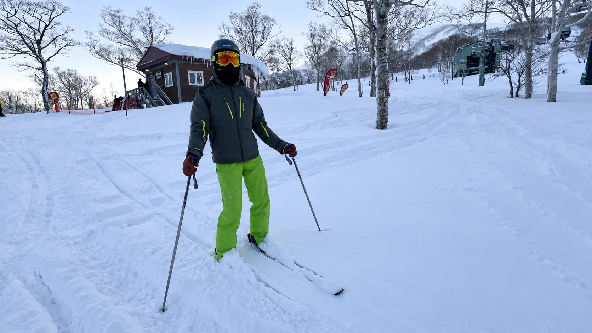
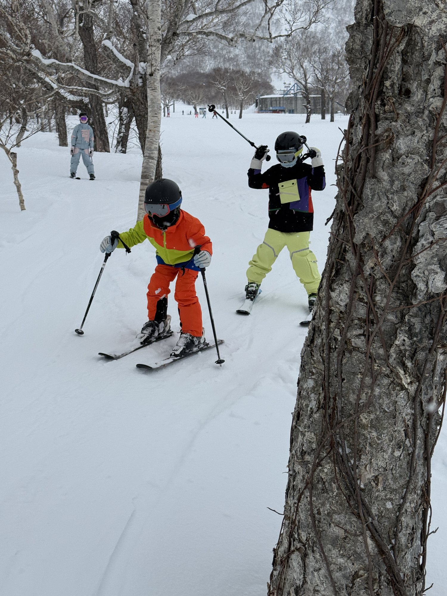
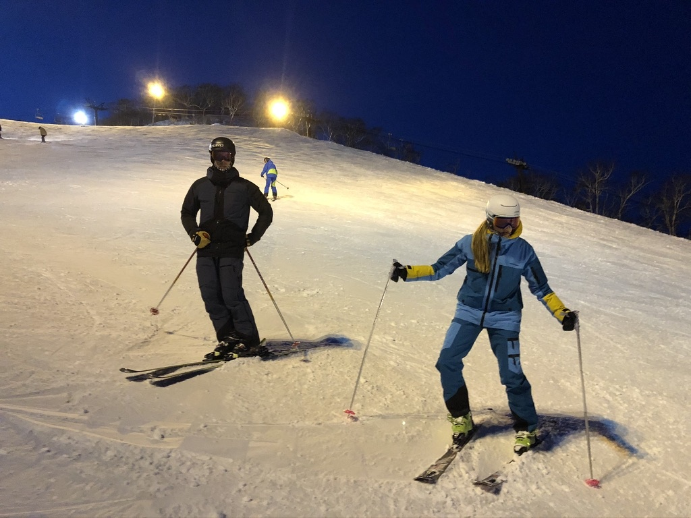
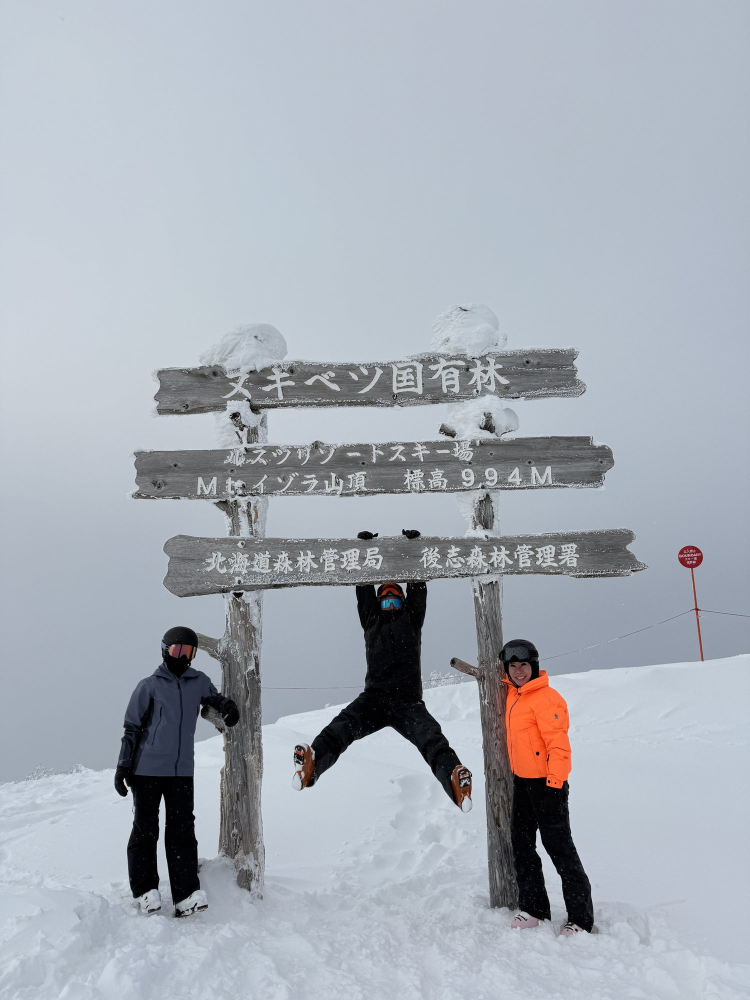
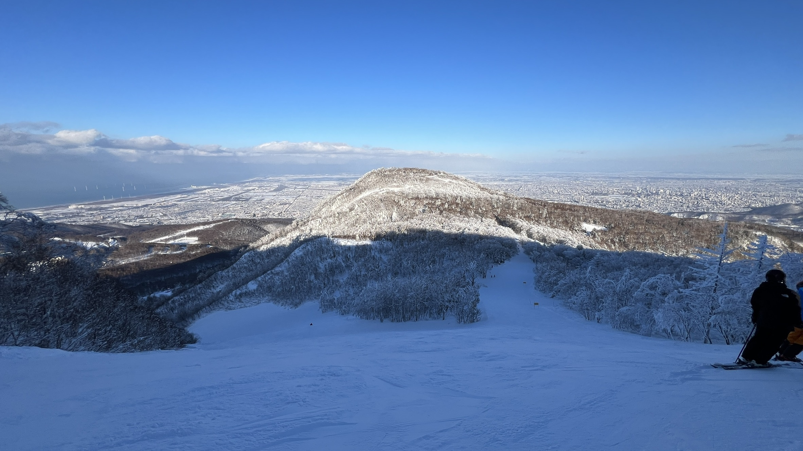

Consistent snowfall
Regular storms can refresh the mountains throughout your stay, creating the light snow Japan is famous for.
Niseko · Japan
Private instruction, coaching and guiding—with the flexibility to find the snow, terrain and experience that suit you.
December–March
Come for the snow. Stay for the experience. Japan combines remarkably consistent winter snow with welcoming culture, memorable food and mountains that offer something for every skier.
Regular storms can refresh the mountains throughout your stay, creating the light snow Japan is famous for.
Enjoy sheltered tree skiing, open runs and progressive terrain—from first powder turns to challenging mountain days.
Niseko is only the beginning. Rusutsu, Kiroro, Sapporo Kokusai and Teine each offer a different experience.
Onsens, exceptional food and Japanese hospitality make the time away from the slopes just as memorable.
The Diamond Pro experience
Creating incredible ski experiences through local knowledge, world-class instruction and a day shaped around you.
Pick-up and drop-off can be arranged, giving you an easier start and the freedom to finish wherever works best for your day.
We’ll choose terrain that suits your ability and seek out the best available conditions. If the snow is average, we can adjust the plan, take time over lunch, or explore something different.
Your experience can extend beyond Niseko to Rusutsu, Kiroro, Sapporo Kokusai or Teine, with cat skiing and snowshoeing also possible by arrangement.
Niseko & Hokkaido experiences

A complete private mountain day
Regular ¥120,000Peak ¥145,000

The classic full-day private
Regular ¥95,000Spring ¥85,000 · Peak ¥120,000

Focused private coaching
Regular ¥70,000Spring ¥60,000

A quieter end to the ski day
Regular ¥35,000Peak ¥38,000

Private Resort Adventure · 8hr
Regular ¥140,000Peak ¥160,000

Private Resort Adventure · 10hr
Regular ¥170,000Spring ¥160,000 · Peak ¥200,000
Beyond Niseko, built around you
Designed for youExplore more of Hokkaido with a private multi-day itinerary shaped around your dates, goals and the best available snow.
Prices shown are starting rates for the 2026–27 season. Final price and availability are confirmed when booking. Lift passes, equipment, meals and personal expenses are not included.
2026–27 Niseko season
| Lesson | PeakDec 14–Jan 3 Feb 6–12 |
RegularDec 8–13 Jan 4–Feb 5 Feb 13–28 |
Early / SpringNov 28–Dec 7 Mar 1–Apr 11 |
|---|---|---|---|
| 3hr | ¥90,000 | ¥70,000 | ¥60,000 |
| 6hr | ¥120,000 | ¥95,000 | ¥85,000 |
| 2hr Twilight | ¥38,000 | ¥35,000 | ¥35,000 |
| 7hr | ¥145,000 | ¥120,000 | ¥120,000 |
| 8hr | ¥160,000 | ¥140,000 | ¥140,000 |
| 10hr | ¥200,000 | ¥170,000 | ¥160,000 |